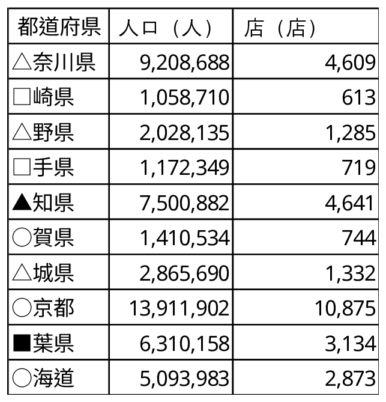
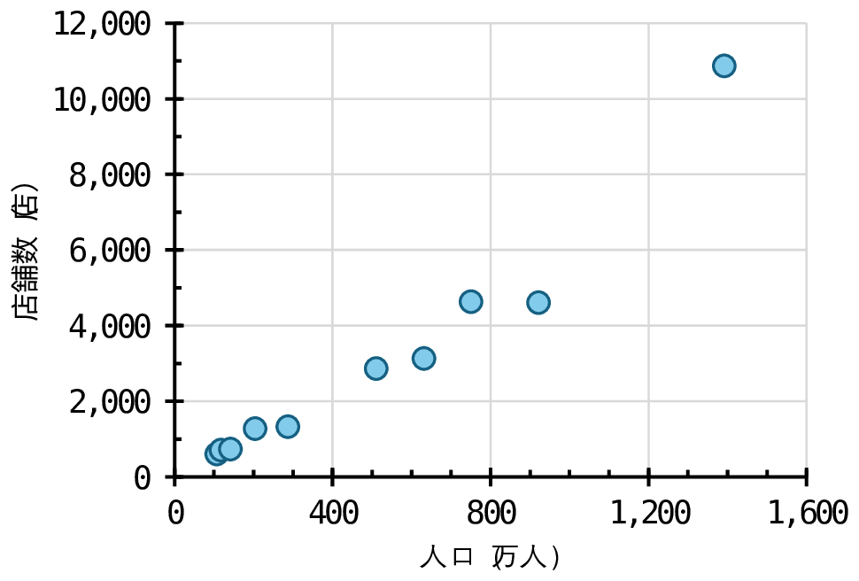
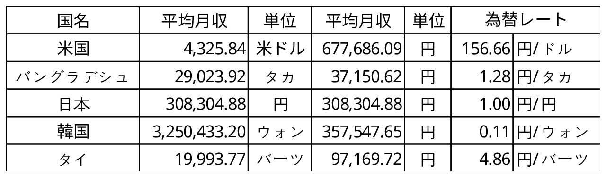
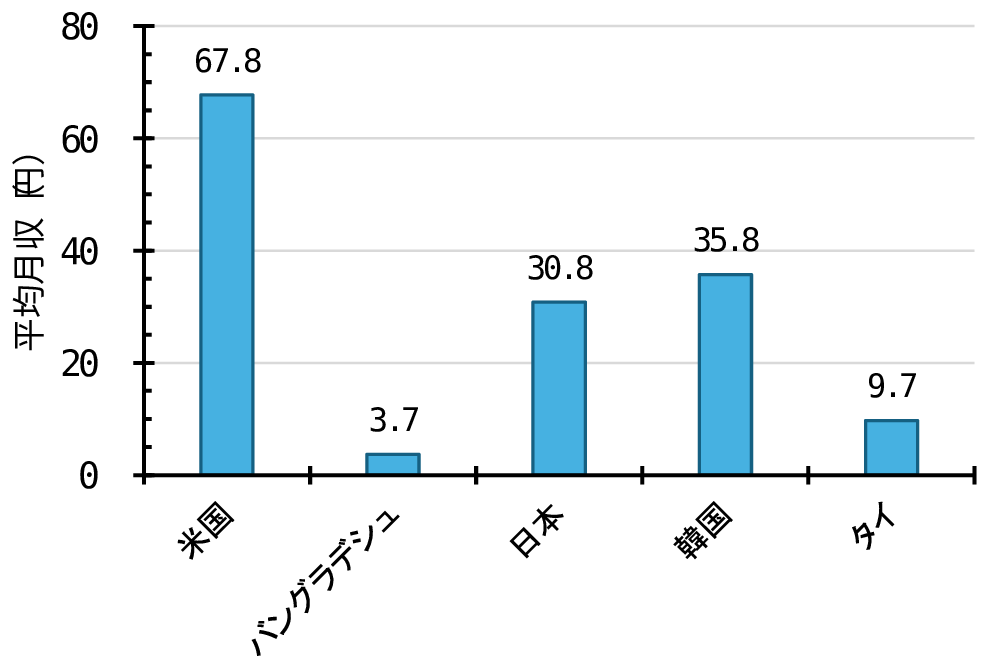

第2部：データで紐解く、立地のヒミツ
（データサイエンス実践）
ここでは、なぜその店、その工場は「そこ」にあるのか？
勘ではなく、データを使って分析し、その理由について考えよう。
●店舗立地の分析
問い：あなたが店長なら、どこにお店を出す？
ショップを成功させる秘訣は、まず「お客さんに来てもらうこと」。
効率よくたくさんの人に来てもらうなら、やっぱり人口が密集しているエリアを選びたくなりますよね。
そこで、「人口の多さ」と「店舗の数」には、どのくらいの関係があるのかを分析してみます。都道府県別のリアルな数字を使って散布図を描き、私たちの直感がデータでも正しいのか、自分の目で確かめてみましょう。
例題 人口と店舗数の関係
次の表は、都道府県別の人口と店舗数の練習用データです。
表 都道府県別の人口と店舗数

散布図を作成して、人口と店舗数の関係を調べます。

図 都道府県別の人口と店舗数
このグラフから人口と店舗数には正の相関が見られ、人口が多いほど、店舗数が多い傾向にあることが分かります。ちなみに、人口1万人あたりの店舗数は、6店舗となっています。
○ワーク（データ分析）都道府県別の「人口」と「店舗数」の関係
e-Stat（政府統計の総合窓口）から都道府県別の「人口」と「店舗数」を抽出し、散布図を描いて、人口と店舗数の関係を確認します。
・データ
参考サイト：e-Stat（政府統計の総合窓口））
【人口】※店舗数の年度にあわせること
（1）総人口（人）
トップページ - 地域から探す - 社会・人口統計体系 - データ表示 (都道府県データ)
（2）住民基本台帳人口
政府統計名：住民基本台帳に基づく人口、人口動態及び世帯数調査
表番号：24-01
統計表：【総計】都道府県別人口、人口動態及び世帯数
【店舗数】
（1）事業所数（民営）（小売業）（事業所）
トップページ - 地域から探す - 社会・人口統計体系 - データ表示 (都道府県データ)
（2）織物・衣服・身の回り品小売業-民営事業所数
統計名：経済センサス‐基礎調査 令和６年経済センサス‐基礎調査 甲調査（民営事業所） 事業所に関する集計 事業所数、従業者数
表番号：4-1A
表題：産業(小分類)別民営事業所数(雇用者のいない個人経営の事業所を除く)－全国、都道府県、市区町村
表示項目選択：産業小分類「織物・衣服・身の回り品小売業」、地域「47都道府県」
・さらに深い探究
散布図から、全体の傾向から外れている県を見つけて、なぜなのか話し合ってみましょう。
人口のわりに店舗数が多い県は、何処で、なぜ外れているのか？
人口のわりに店舗数が少ない県、何処で、なぜ外れているのか？
○ワーク（発展的な分析）地図に店舗をプロットしてみよう
Googleマップの検索機能を使って、ユニクロやZARAなどの店舗を地図にプロットしてみよう。
人口との関係は？人が多く集まる場所だから駅前に店舗が多いのか？
それとも、若者の割合や流行に敏感な地域性が関係しているのか？
また、ショップによる立地の違いは？
気付いたことを話し合ってみましょう。
参考サイト
JRの駅乗降客数（railway.sidearrow.net）
●工場立地の分析
問い：「Made in Japan」が少ないのは、なぜだろう？
多くのファストファッションブランドが、東南アジアや南アジアに巨大な工場を持っています。「あっちの方が安く作れるから」という直感は、果たして数字でも証明できるのでしょうか？
今回は、世界各国の「賃金」や「土地の値段」などのデータを比較分析します。「安さ」と「場所」の切っても切れない関係について、データサイエンスの視点から答えを見つけ出しましょう！
例題 国別の賃金の比較
次の表は、国別の賃金の比較用の練習用データです。
表 国別の賃金

棒グラフを作成して、賃金の比較を行います。

図 国別の賃金
このグラフから服の原産国であるバングラデシュの賃金が他の国に比べて安い傾向にあることが分かります。およそ日本の賃金の8分の1となっています。
○ワーク（データ分析）国別の「賃金」や「土地の値段」の比較
世界各国の「賃金」や「土地の値段」などのデータを調査し、服の原産国と他の国を比較分析します。
服の原産国の「賃金」等は本当に安いのでしょうか？
・データ
参考サイト
・さらに深い探究
単に「安く作れるから」で終わらせず、下記の視点でも話し合ってみましょう。
人件費は安いけれど、日本から遠い国で作ると、運ぶのにお金と時間がかかるだけでなく、二酸化炭素排出量も多く輩出されます。それでも海外で作るメリットって何だろう？
海外で作ると、企画してからお店に並ぶまで数ヶ月かかることもあります。その間に流行が終わっちゃったらどうする？